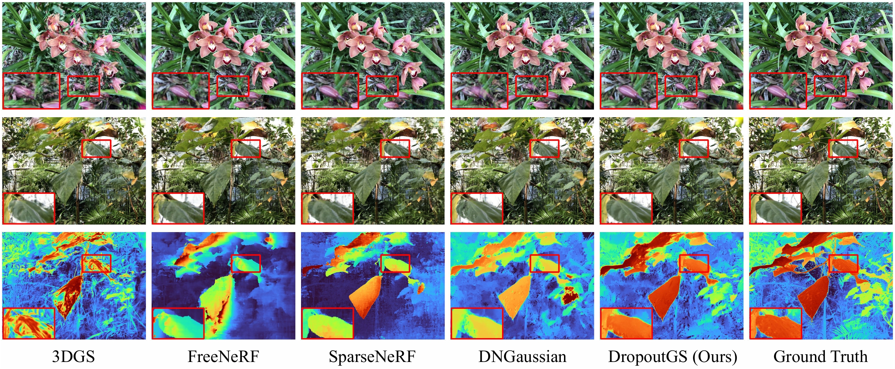
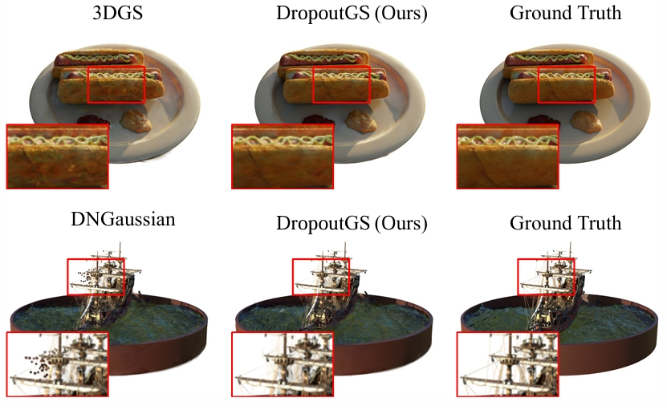

Method

In DropoutGS, a random dropout regularization is applied to alleviate the overfitting degradation, obtaining smooth and artifact-free coarse rendering. To remedy the high-frequency detail loss during optimization, we additionally employ an edge-guided splitting strategy for finer synthesis views.
Comparison
Comarison with current SOTA baselines. Zoom in for better visualization.
LLFF

Blender
BibTeX
@article{xu2025dropoutgs,
title={DropoutGS: Dropping Out Gaussians for Better Sparse-view Rendering},
author={Xu, Yexing and Wang, Longguang and Chen, Minglin and Ao, Sheng and Li, Li and Guo, Yulan},
journal={arXiv preprint arXiv:2504.09491},
year={2025}
}